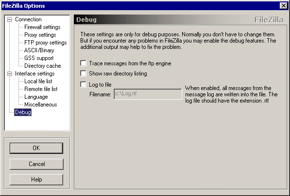

Debug
Overview:
On this page you can enable some debug features which are useful if you have problems with FileZilla.

Trace messages from the ftp engine:
When this option is enabled, FileZilla shows a lot of additional information in the message log to indicate what happens inside the program
Show raw directory listing:
When enabled, FileZilla displays the raw directory listing in the message log exactly as received from the server
Log to File:
Everything that appears in the message log is written into the file with the given filename
Enable debug menu:
If enabled, a debug menu appears in the main menu of FileZilla. It's recommended to leave this settings disabled.